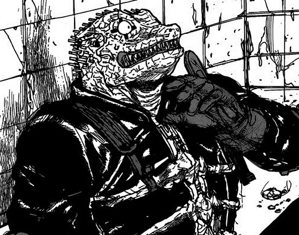
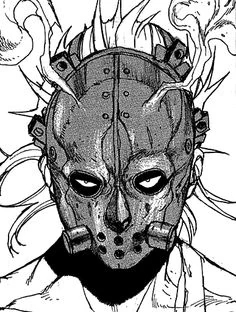
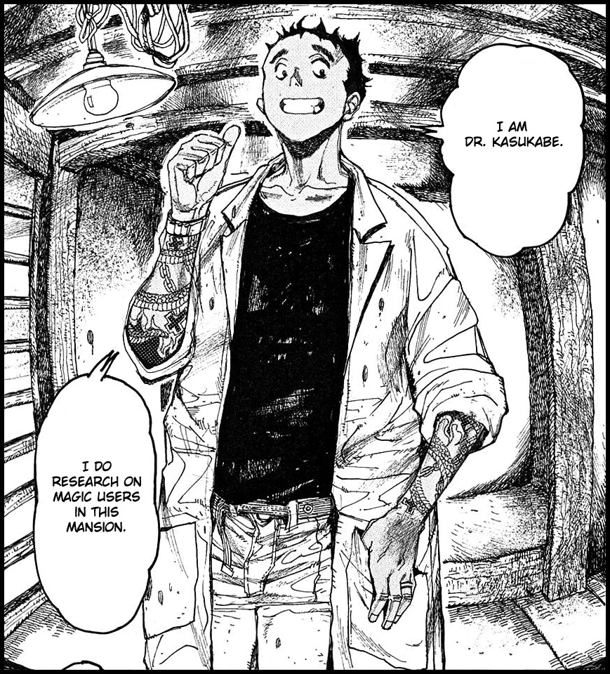
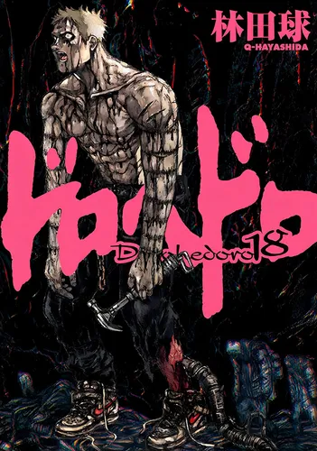
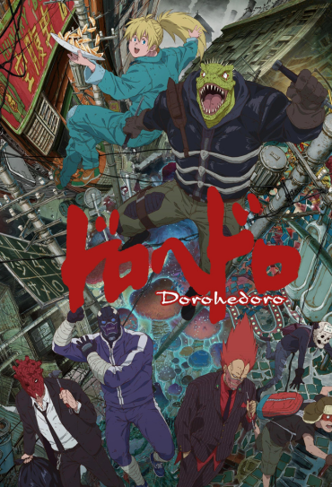

Kaiman
Protagonista principal. Ele e um humano nascido no Buraco com imunidade a magia.

Protagonista principal. Ele e um humano nascido no Buraco com imunidade a magia.

Companheira de Kaiman. Ela é dona de um restaurante chamado "O Inseto Faminto no Buraco".

Um cientista com uma leve obsessao por estudar usuários de magia.

